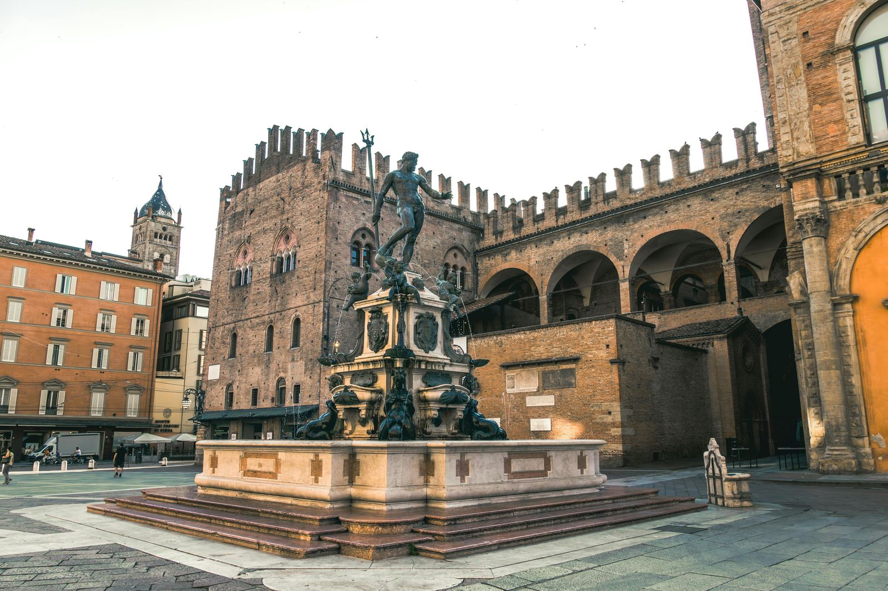
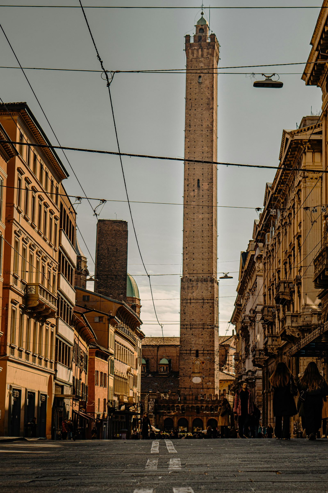
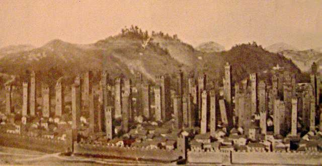

Bologna, "la turrita", è famosa per le sue torri medievali e la sua ricca storia architettonica.
Bologna è famosa per le sue torri medievali, tanto da essere soprannominata "Bologna la turrita". Questa tradizione risale a secoli fa, con le torri che dominano il panorama cittadino, simili a quello della moderna New York.
Recentemente, Bologna ha visto la costruzione di nuove torri imponenti, come quella progettata dall'architetto giapponese Kenzo Tange e la Torre Unipol, con il suo tetto fotovoltaico inclinato di 45 gradi. Tuttavia, la storia delle torri bolognesi è antica e affascinante.
Durante il Medioevo, Bologna era caratterizzata da numerose torri, costruite soprattutto tra il 1116 e il 1123, quando fu eretta la cerchia dei torresotti, la seconda cinta muraria della città. Queste torri, situate sulle porte delle mura, fungevano da difesa e da simbolo di potere delle famiglie più ricche.

Le "case torri" erano abitazioni alte, costruite per dare lustro alle famiglie proprietarie e servivano anche come rifugio in caso di attacchi. Le torri più famose sono quella degli Asinelli e la Garisenda, situate nel cuore della città. La Torre degli Asinelli, alta 97,2 metri, è la torre pendente più alta d'Italia e offre una vista mozzafiato sui tetti di Bologna, raggiungibile salendo circa 500 gradini.
Bologna contava circa 100 torri, ma oggi ne restano poco più di 20. Alcune torri furono distrutte o abbattute, come le torri Artenisi e Riccadonna nel 1919. La Torre degli Asinelli, secondo la leggenda, fu fatta costruire da Giovanni Visconti, duca di Milano, per controllare il mercato di mezzo.

Visitando Bologna, non si può perdere una passeggiata nel Mercato di Mezzo, dove è possibile assaporare l'atmosfera dei secoli scorsi e gustare prodotti tipici come la famosa Mortadella di Bologna.

fonte: Bologna, la New York del 1200
Parole Chiave
| Torre | Costruzione molto alta |
| Medioevo | Periodo storico molto tempo fa |
| Mura | Grandi pareti che proteggono la città |
| Famiglia | Gruppo di persone imparentate |
| Difesa | Protezione contro pericoli |
| Potere | Forza e autorità di fare qualcosa |
| Vista | Ciò che si può vedere da un posto alto |
| Mercato | Luogo dove si comprano e vendono cose |
| Prodotto | Cosa che si può comprare o vendere |
| Tipico | Molto comune in un posto specifico |
| Costruzione | Edificio, qualcosa di costruito |
| Centro storico | Parte vecchia e importante di una città |
| Gradino | Parte di una scala dove si mette il piede |
| Ricco | Persona con molti soldi |
| Panorama | Vista bella di un luogo |
| Abitazione | Casa, luogo dove si vive |
| Passeggiata | Camminare per piacere |
| Leggenda | Storia vecchia e famosa |
| Visita | Andare a vedere un posto |
| Progettare | Pensare e fare un piano per costruire qualcosa |
| Imponente | Molto grande e impressionante |
| Simbolo | Segno che rappresenta qualcosa |
| Atmosfera | Sensazione di un luogo |
| Antico | Molto vecchio |
| Tempo fa | Molto tempo nel passato |
| Conoscere | Sapere o capire qualcosa |
| Scoprire | Trovare qualcosa di nuovo |
| Monumento | Struttura importante per storia o cultura |
| Cultura | Idee, usanze e tradizioni di un gruppo |
| Turista | Persona che visita un posto nuovo |
Esercizio
Domande
- Qual è il significato del soprannome "Bologna la turrita"?
- Chi è l'architetto giapponese che ha progettato una delle recenti torri di Bologna e in quale quartiere si trova?
- Quando furono costruite la cerchia dei torresotti e quale funzione avevano le torri?
- Quali sono le due torri medievali più famose di Bologna e dove si trovano?
- Qual è la leggenda legata alla Torre degli Asinelli riguardante gli studenti universitari?